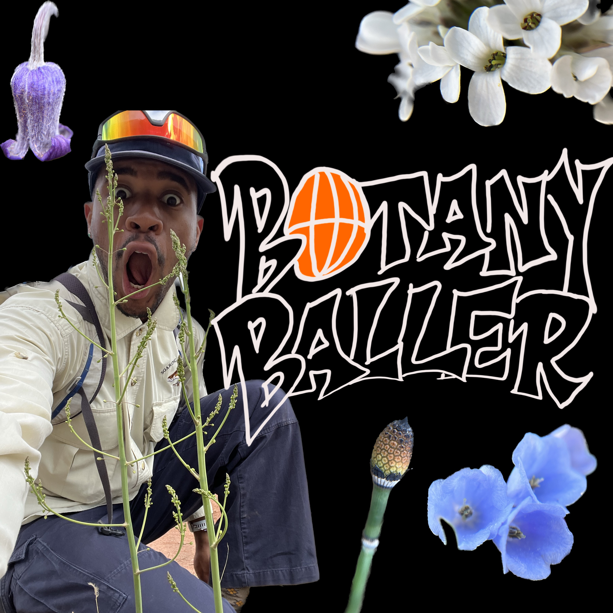

Science Communication

the one and only
flynnstone
dapped me up with this flick!
podcasts
lets chat about catopsis beteroniana...
verbascum thapsus! my favorite plant!
why do flowers have different smells?